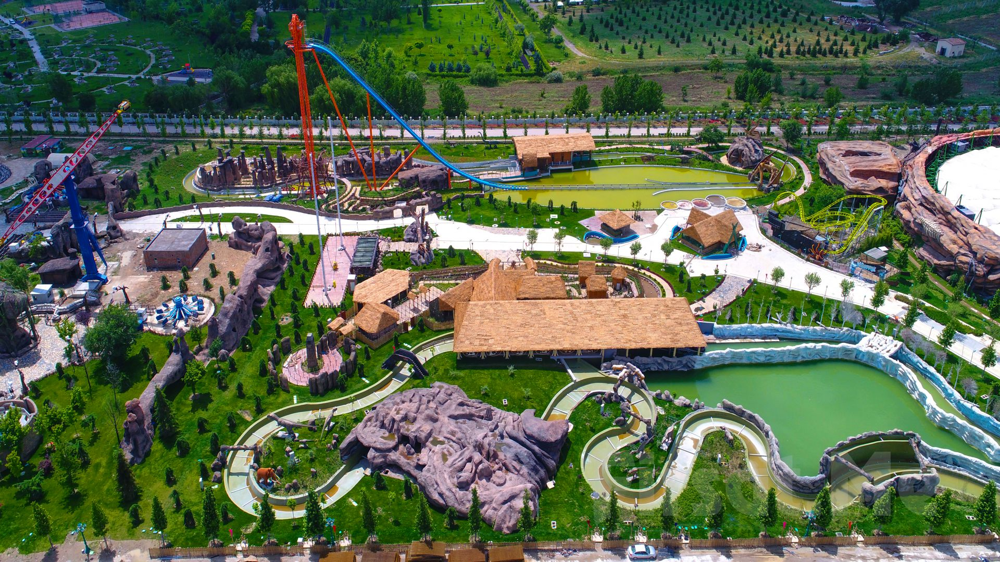
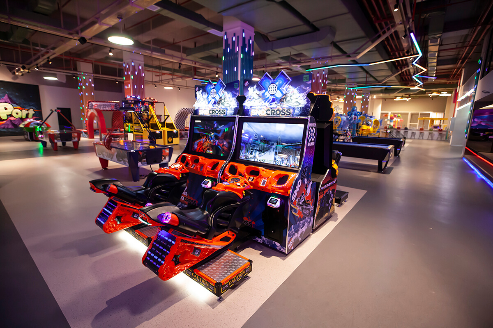
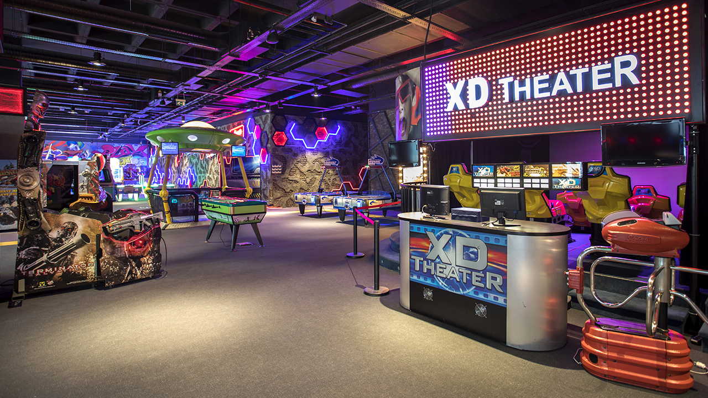
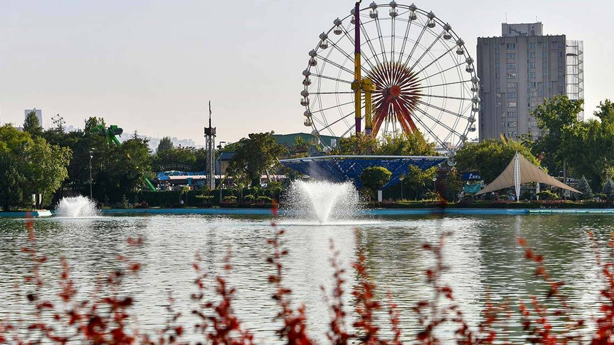

Avrupa’nın en büyük tema parklarından biri olan AnkaPark, devasa alanında roller coaster’lar, su parkları ve eğlence üniteleriyle dikkat çeker.
Adres: Gazi Mahallesi, Yenimahalle/Ankara
Ziyaret Saatleri: Her gün 10:00 – 20:00
Giriş: Ücretli

Podium AVM içinde yer alan bu merkez; bowling, çarpışan arabalar ve çocuklar için oyun alanları sunar.
Adres: Podium AVM, Yenimahalle/Ankara
Ziyaret Saatleri: Her gün 10:00 – 22:00
Giriş: Oyun alanlarına göre değişken

Panora AVM içerisinde yer alan bu merkez, hem çocuklar hem de gençler için interaktif oyunlar ve simülasyonlar sunar.
Adres: Panora AVM, Oran Mah., Çankaya/Ankara
Ziyaret Saatleri: Her gün 10:00 – 22:00
Giriş: Ücretli

Ankara'nın merkezinde yer alan tarihi Gençlik Parkı’ndaki lunapark, nostaljik atmosferiyle ailece eğlenmek isteyenler için ideal bir yerdir.
Adres: Doğanbey Mah., Altındağ/Ankara
Ziyaret Saatleri: Mevsime göre değişir (Genelde 11:00 – 22:00)
Giriş: Ücretsiz (oyunlar ücretlidir)